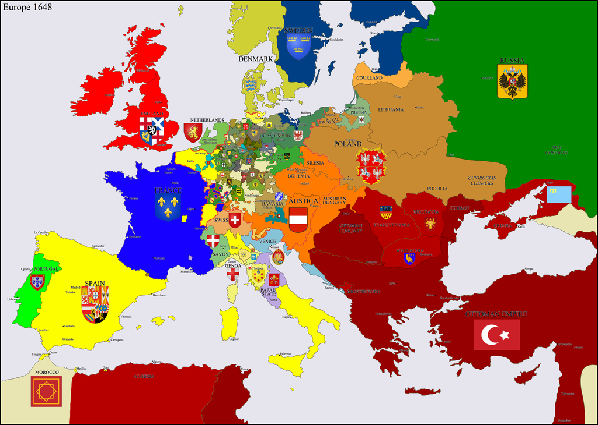

Mittelalter 6. bis 15. Jahrhundert

Im Übergang von der Spätantike ins Frühmittelalter zerbrach die politische und kulturelle Einheit des durch die griechisch-römische Antike geprägten Mittelmeerraums. Während das Byzantinische Reich im Osten intakt blieb, ging das Westreich 476 unter. Es bildeten sich neue Reiche innerhalb (wie das Frankenreich, das Westgotenreich auf der Iberischen Halbinsel und die Reiche der Angelsachsen in Britannien) und außerhalb (wie die Herrschaften der Slawen in Ost- und Südosteuropa und die neuen Reichsbildungen in Skandinavien) des ehemaligen weströmischen Reichs. Bevölkert waren diese Reiche von der ansässigen romanisierten Bevölkerung und aus in der Völkerwanderungszeit eingewanderten Gruppen (germanische Stämme und Slawen).
Diese Website wurde von Saveli Gulas erstellt